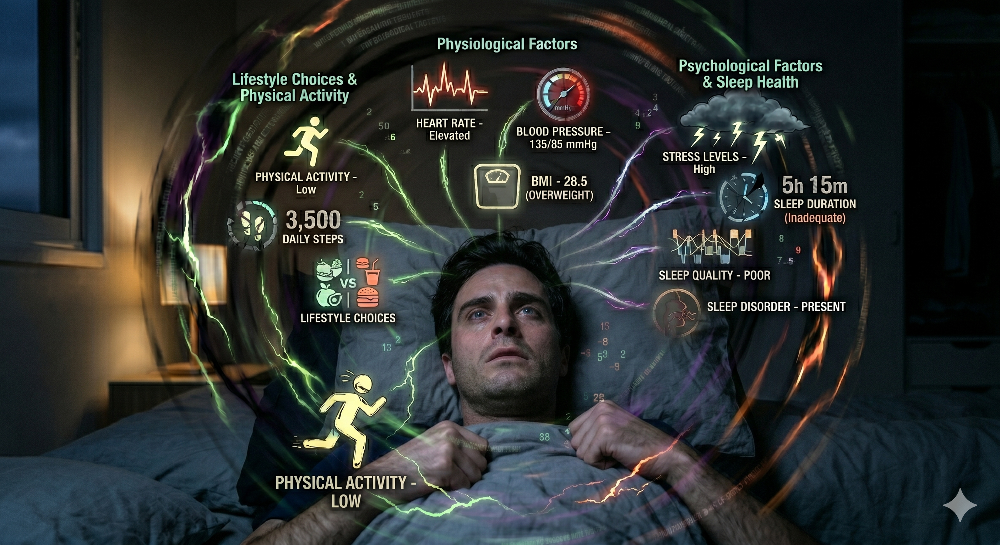

Decoding the Sleep Matrix
Sleep is not a passive state, but an active, complex physiological process. The visualization below maps the interconnected factors that dictate whether you wake up feeling restored or depleted.

SCAN COMPLETEThe Vicious Cycle
Notice how the parameters interact. High stress levels elevate heart rate and blood pressure, creating a hyper-aroused state that makes falling asleep incredibly difficult. Compounded by low physical activity, the body lacks the physical exhaustion required to trigger deep, restorative sleep phases.
Physiological Factors
- Heart Rate: An elevated resting heart rate prevents the body from entering the relaxed state necessary for sleep onset.
- Blood Pressure (135/85 mmHg): Pre-hypertension or hypertension is often correlated with fragmented sleep architecture.
- BMI (28.5 - Overweight): Excess body weight significantly increases the risk of sleep-disordered breathing, including Obstructive Sleep Apnea (OSA).
Lifestyle Choices
- Physical Activity: Categorized as 'Low'. Regular exercise increases sleep drive and helps regulate circadian rhythms.
- Daily Steps (3,500): Well below the recommended target. Sedentary lifestyles are directly linked to poorer sleep quality.
- Diet & Nutrition: Heavy, late-night meals or high sugar/caffeine intake disrupts digestive resting phases and neurochemical sleep signals.
Psychological & Sleep Health
- Stress Levels (High): Cortisol and adrenaline spikes cause a racing mind, making it impossible to transition into Stage 1 sleep.
- Sleep Duration (5h 15m): Clinically inadequate. Most adults require 7-9 hours for cognitive maintenance and physical repair.
- Sleep Quality & Disorders: Rated as 'Poor', with a sleep disorder likely present (e.g., insomnia, apnea), resulting in waking up unrefreshed.